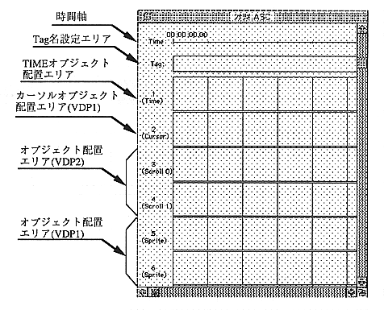

Time axis
The time axis of the scenario. It consists of time and frame position and supports SMPTE format.
SMPTE format 00: 00: 00.00 (hour: minute: second.frame number)
The frame number is 00 ~ 29. The time axis is 01: 29: 59: 29 and you can create a scenario of up to 90 minutes.
Tag name setting area
This area is used to set the branch destination when an action event occurs.
TIME object placement area
This is the area to place the TIME object in the object window. Other objects cannot be placed.
Cursor object placement area (VDP1)
You can place picture objects and NO DISP cursor objects in the object window. Objects are displayed as sprites using VDP1. Normally, the cursor created with PICT is placed. The cursor object can be moved up / down / left / right by the cursor key of Saturn PAD. However, the NO DISP cursor object does not display the cursor as a matter of course, so set and use actions.